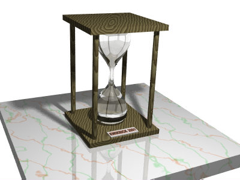
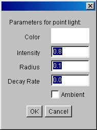
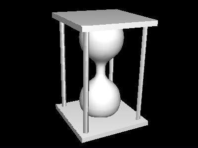
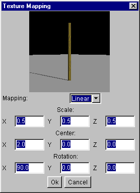

Art-of-Illusion - didacticiel de modélisation
le sablier
Version 1.1 Pour Art of Illusion version 0.9 Copyright 2001, Rick
van der Meiden
Traduction: les Manuels d'Aide en Français sur manuelsdaide.com

Introduction
Dans ce didacticiel, vous allez apprendre à modéliser un objet simple
avec Art-of-Illusion (AoI), à l'aide de l'exemple du sablier de l'illustration
ci-dessus. Ce didacticiel ne couvre pas toutes les fonctions disponibles dans
AoI, elles sont tout simplement trop nombreuses, mais vous en saurez suffisamment
pour une mise en route. Vous arriverez probablement à comprendre le reste
en essayant, en expérimentant, en créant des images sympas.
Si vous êtes déjà familiarisé avec la modélisation
3D, vous n'aurez sans doute pas besoin de suivre ce didacticiel pas à pas.
Vous pourrez y jeter un coup d'oeil pour avoir une idée des possibilités
du programme, et vous pourrez vous lancer et l'essayer vous-même. Pour les
novices: Je vais vous permettre de créer votre propre image 3D en quelques
minutes. Pour être complet, un fichier de scène AoI nommé
"hourglass.aoi" (ce fichier a été créé de toute
pièce par l'auteur de la traduction, car le fichier d'origine ne correspond
plus à la version actuelle du programme) est distribué avec ce didacticiel.
Vous pouvez simplement l'ouvrir avec le programme de modélisation. Cependant,
si vous souhaitez apprendre avec ce didacticiel, vous devriez essayer de créer
la scène vous-même.
Tour d'horizon
Supposons que vous ayez téléchargé la totalité des
éléments de AoI, que vous ayez la bonne version de JDK, que vous
ayez lu les fichiers readme, et que tout est en place. Si ça n'est pas
le cas, consultez la page d'accueil de
Art-of-Illusion. Lorsque vous lancez AOI, l'écran principal apparaît.
En haut de la fenêtre se trouve la barre de menu de base; examinez-la, voyez
ce qu'elle contient comme sous-menus. Si vous ne comprenez pas encore les nombreux
éléments qu'elle contient, ne vous en faites pas, vous les maîtriserez
en son temps. A gauche de la fenêtre se trouvent des icônes. Si vous
cliquez dessus, vous sélectionnez un outil et une brève ligne d'information
apparaît en bas de l'écran. Ces icônes sont les suivantes:
| déplacer un objet |
 |
 |
pivoter une objet |
| redimensionner un objet |
 |
 |
créer un cube |
| créer une sphère |
 |
 |
créer un cylindre |
| créer un maillage spline |
 |
 |
créer un polygone |
| insérer un appareil photo |
 |
 |
insérer un éclairage |
| créer une courbe interpolée |
 |
 |
créer une courbe approximative |
| déplacer une vue |
 |
 |
pivoter une vue |
L'écran affiche quatre vues du modèle 3D: Devant, Gauche, Dessus
et Camera 1. Pour chacune des vues, l'utilisateur peut définir un
appareil photo (Caméra) ou point de vue standard (devant, gauche, dessus,
ect), un mode Perspective ou visualisation parallèle, et un facteur de
zoom (100 par défaut). Ces points de vue peuvent être modifiés
à l'aide des deux outils appropriés, Déplacer un Objet et
Pivoter un Objet. Vous changerez souvent l'échelle et la position de ces
vues, mais pas le point de vue. Les vues standard sont tout à fait suffisantes
pour la plupart des sessions de modélisation. Seule, la vue inférieure
droite, Camera 1, sera souvent modifiée car elle est très
utile pour vérifier le modèle. A droite (vide actuellement) se trouve
un espace affichant la Liste des Objets (formes) de votre modèle. A partir
de cette liste, vous pouvez sélectionner ou dé-sélectionner
les objets en cliquant sur leur nom. De même, double-cliquer dessus fera
apparaître la boîte de dialogue d'édition de l'objet. Avant
de commencer, vous devez savoir ce que l'on entend par Coordonnées. La
position et les dimensions des objets sont déterminées par un système
de coordonnées selon trois axes nommés X, Y et Z. L'axe des X est
considéré comme pointant vers la droite, c'est-à-dire que
plus la coordonnée X d'un point est élevée, plus elle se
situe vers la droite du modèle. De même, l'axe des Y pointe vers
le haut et celui des Z en dehors de l'écran, vers vous (en jargon, on appelle
ceci un système de coordonnées à droite).
Mise en route
Il est souvent conseillé de débuter une session de modélisation
3D en créant d'abord une esquisse de votre modèle sur un papier
quadrillé, pour avoir une idée de ses dimensions et de sa forme.
Si vous ne le faites pas, placez au moins une grille dans la programme de modélisation:
- sélectionnez le menu Scène->Grilles
- réglez Espacement de la grille sur 0.5
- réglez Subdivisions sur 10
- activez Montrer la grille et Coller à la grille
- cliquez sur OK
Ce qui vous permettra de dessiner des objets facilement selon une position et
des dimensions précises et de les aligner de façon orthogonale.
Vous pouvez changer les paramètres de la grille à tout moment, pour
satisfaire vos besoins, en grille plus fine ou plus grossière. Maintenant,
vous pouvez commencer à dessiner. Dessinez d'abord un Cube pour le haut
et le bas de l'image sablier:
- sélectionnez l'outil 'créer un
cube'
- tracez un cube de 1.5 unités de large sur 0.1 unités de haut,
dans le vue de Devant. C'est-à-dire, avec une grille de 0.5
unités et de 10 subdivision, 3 lignes de grille en largeur et une subdivision
en hauteur.
- sélectionner l'outil 'redimensionner
un objet'
- mettez l'objet à l'échelle dans la vue de Dessus
jusqu'à obtenir un carré de 1.5 sur 1.5 unités.
- sélectionnez l'outil 'déplacer
un objet'
- déplacez l'objet de façon à le centrer dans la vue
de Dessus.
- déplacez-le dans la vue de Devant de façon à
le placer juste en dessous de la seconde ligne de la grille à partir
du centre.
- vérifiez les coordonnées du cube à partir du menu
Objet->Disposition de l'objet. La taille du cube doit être de
1.5 unités pour l'axe des X, 0.1 unités pour l'axe des Y, et
1.5 pour l'axe des Z. Son origine doit être positionnée à
<0, -1.05, 0>. A partir de cette boîte de dialogue, vous pouvez changer
la taille, la position et l'orientation du cube (illustration ci-dessous).

Notez que vous pouvez dessiner un objet dans la vue de Devant, de Gauche
ou de Dessus. Comme vous ne pouvez dessiner que deux dimensions à
la fois, vous aurez à définir par la suite une troisième
dimension. Vous pouvez utiliser les outils Déplacer et Redimensionner pour
changer la position et les dimensions du cube. Mais si vous avez une idée
précise des dimensions souhaitées, la boîte de dialogue Disposition
de l'Objet est plus rapide. Le premier Cube sera le bas ou base du modèle.
Le haut du modèle sera exactement identique, et vous pouvez donc le créer
par la copie du précédent.
- sélectionnez d'abord la premier cube, Cube 1 à partir
de la liste des objets à droite
- sélectionnez le menu Édition->Copier
- sélectionnez le menu Édition->Coller
- déplacez la copie vers le haut jusqu'à placer le bas du cube
à y=1. Pour ce faire, vous pouvez utiliser:
- l'outil 'déplacer un objet'.
Maintenez enfoncée la touche Maj pour un déplacement orthogonal
seul.
- l'option de menu Objet->Disposition de l'Objet. Centrez-le à
y=1.05.
- l'option de menu Objet->Transformer l'Objet. Déplacez-le
de 2 unités vers le haut sur l'axe des Y.
- l'option de menu Objet->Aligner les Objets. Alignez le bas (axe
des y) sur 0.
Nous avons maintenant deux cubes, symétriques par rapport à l'origine
des axes. Notez que les deux cubes sont toujours nommés Cube1. Vous
pouvez changer le nom des objets en choisissant l'option de menu Objet->Renommer
l'Objet. Les noms appropriés pourraient être 'Haut' et 'Bas'.
Il devient alors simple de les sélectionner à partir de la liste
des objets. En utilisant les techniques ci-dessus, vous pouvez aussi créer
les quatre piliers entre les plaquettes du haut et du bas. Utilisez l'outil
'créer un cylindre' pour créer un cylindre selon les proportions
suivantes:
- position: X = 0.6, Y = 0, Z = 0.6
- taille: X = 0.1, Y = 2, Z = 0.1
et créez trois autres cylindres pour les autres piliers du modèle
sablier.
Conseils:
- tracez le premier cylindre dans la vue de Devant ou la vue
de Gauche, ce qui vous permettra de définir son diamètre
ainsi que sa longueur. Placez le cylindre en utilisant les autres vues.
- Créez les autres cylindres en les copiant et en les déplaçant.
- Vous ne pourrez pas voir les cylindres créés dans la vue
de Dessus car ils sont cachés par le cube supérieur. Sélectionnez
le menu Scène->Mode d'Affichage->Fil de fer, et vous pourrez
les faire apparaître.
Nous avons désormais un cadre pour le sablier. Maintenant, utilisez
l'outil 'déplacer une vue' et l'outil
'pivoter une vue' pour modifier la vue Camera
1 ou vue en Perspective. Vous pouvez alors voir le modèle
à partir de l'un des angles de vue de votre choix. Le résultat
devrait avoir cet aspect:

Un objet complexe
La forme la plus complexe de cette scène est le Réservoir de
Verre. Il sera créé à l'aide de l'outil Tour. Un tour est
un objet créé en faisant tourner une courbe spline, qui détermine
le contour de la forme, autour d'un axe. Pour créer la courbe contour,
nous utiliserons l'outil 'créer une courbe
approximative'. Pour éviter un travail de précision pénible
à la souris, créez d'abord une Grille plus fine: Espacement 0.2
avec 2 subdivisions. Sélectionnez ensuite le menu Scène->Maximiser
la Vue. Vous pouvez alors régler le facteur de zoom sur 200 pourcent.
Créez ensuite la courbe spline en ajoutant les points 1 à 9 comme
illustré dans l'image ci-dessous (dans cet ordre). Double-cliquez sur
le point 9 pour terminer la courbe spline. Vérifiez que le premier et
le dernier point soient placés convenablement sur l'axe des Y et tangents
aux cubes supérieurs et inférieurs créés précédemment.

La courbe approximative n'est pas très intuitive, mais vous permet de déterminer
la direction de la courbe de façon plus précise que ne le ferait
une courbe interpolée. La direction de la courbe au début et à
la fin est déterminée par le seul point adjacent. La courbe est
verticale au point 5 car les points 4 et 6 sont tous deux placés verticalement
à partir de ce point. En général, la courbe à tout
point est déterminée par le point qui le précède et
les deux points de définition suivants (la courbe est un spline quadratique,
ou spline de troisième ordre). Comme axe central du Réservoir de
Verre, nous utiliserons la ligne passant par les deux points du début et
de la fin de la courbe. Dans notre tracé, il s'agit de l'axe des Y, mais
en utilisant la première ligne, il en résulte un objet compact.
Pour créer le Tour, sélectionnez d'abord la courbe et choisissez
le menu Outils->Tour. Dans la boîte de dialogue Tour, choisissez
la Line though endpoints comme axe du tour (illustration ci-dessous).

La forme du Tour est centrée automatiquement sur 0,0,0. C'est exactement
là où nous voulons qu'il soit placé, donc ne touchons à
rien (bien entendu, il ne s'agit pas d'une coïncidence, c'est de cette
façon que nous l'avons défini!). La courbe spline que nous avons
créé en premier est désormais redondante. Vous pouvez l'effacer,
mais ça n'est pas nécessaire car elle n'apparaîtra pas lors
de la conversion finale. Pour supprimer un objet, sélectionnez-le (à
partir de la liste des objets) et appuyez sur la touche Suppr
du clavier. Vous pouvez aussi utiliser l'option de menu Édition->Effacer.
Présentation de la scène
Maintenant, nous avons terminé la modélisation de toutes les formes.
Nous voudrions essayer de convertir la scène avec les formes et éclairages
appropriés. Avant la conversion, nous allons déterminer la présentation
des éléments clés de la scène, l'appareil photo (Camera)
et l'éclairage. Tout d'abord, déterminons la position et l'orientation
de l'appareil photo. Ce qui se fait facilement avec la vue appareil photo
1 en bas à droite. Déplacez et faites pivoter la vue à
l'aide des outils Déplacer une vue et
Pivoter une vue. Maintenez enfoncée la touche CTRL lors du déplacement
de la souris sur le vue pour effectuer un zoom avant et arrière. Et vous
pouvez retourner la vue en maintenant la touche CTRL enfoncée et en utilisant
l'outil Pivoter une vue. Vous pouvez aussi positionner l'appareil photo à
l'aide des outils déplacer un objet et
pivoter un objet ou via les options du menu Disposition de l'objet.
L'appareil photo est un objet comme un autre. La position selon laquelle vous
pouvez voir le haut et deux autres côtés de l'objet peut être
une bonne position. Ensuite, il nous faut éclairer la scène.
Comme vous pouvez le voir, une source lumineuse est déjà présente
dans la scène depuis le début de la session, Light 1. La
source lumineuse doit être placée de telle sorte qu'elle éclaire
le côté de l'objet que nous regardons. Light 1 n'est probablement
pas positionnée correctement en fonction d'une position donnée de
l'appareil photo. Comme la source est également éloignée,
nous allons la supprimer et en créer une nouvelle. AoI prend en charge
trois types de sources lumineuses: lumière ponctuelle, lumière directionnelle
et lumière spot. Nous utiliserons la plus simple d'entre elles, la lumière
ponctuelle. Suivez les étapes décrites ci-dessous pour éclairer
correctement la scène:
- Trouvez une position pour le nouvel éclairage, près de l'appareil
photo ou tout du moins du même côté que l'appareil photo
par rapport aux objets. Utilisez un facteur de zoom plus faible (30) pour
trouver l'appareil dans les différentes vues.
- Pour créer l'éclairage, cliquez sur l'icône
créer une source lumineuse et cliquez à l'emplacement
souhaité pour placer cette source. Vous aurez probablement à
déplacer cette source lumineuse (exactement comme tout autre objet)
dans l'une des autres vues pour obtenir une position satisfaisante dans l'espace
3D.
- sélectionnez le menu Objet->Éditer l'Objet. Il vous
faut changer certains propriétés de la source lumineuse pour
accorder sa position relative au sablier. Voyez l'illustration ci-dessous
pour vous caler sur les valeurs adéquates. La valeur par défaut
de Intensity est un peu élevée, ce qui fait que l'appareil
photo, aveuglé par la lumière, produirait une image surexposée.
Changez l'intensité pour la valeur 0.8. Réglez Decay Rate
sur zéro. Cette valeur détermine la vitesse à laquelle
l'intensité lumineuse décline avec la distance. En réalité,
le déclin de l'intensité lumineuse est relatif au carré
de la distance. La valeur par défaut de Decay Rate produirait une image
très sombre. Cette simple scène ne nécessite pas de réalisme
trop poussé, et les choses seront plus simples en désactivant
cette option.

Maintenant, passons à la conversion. Sélectionnez le menu Scène->Rendre
la Scène. Ne vous ennuyez pas avec les réglages, cliquez simplement
sur le bouton OK de la boîte de dialogue. Le résultat devrait s'approcher
de l'illustration ci-dessous:

Plutôt rudimentaire, n'est-ce pas ? Tout paraît si monotone. On
préférait du bois et du verre en ajoutant des textures.
Textures et matériaux
Bois
Créons une texture imitant le bois. Sélectionnez le menu Scène->Textures
et cliquez sur le bouton Nouveau dans la boîte de dialogue Textures.
Dans la fenêtre suivante, nommez la texture Bois et choisissez
le type procédural 3D (voir ci-dessous).

Les textures procédurales 3D déterminent la couleur, la rugosité,
la réflexion et autres propriétés de surface comme une
fonction de coordonnées 3D. Pour toute position dans l'espace, la texture
définit l'aspect de la surface de la forme, comme si on avait extrait
la forme d'un bloc uniforme de ce 'matériau'. Cependant, pour les objets
dont on peut voir l'intérieur, les objets transparents, nous utiliserons
un matériau pour définir l'intérieur, et non pas
une texture. Les textures ne définissent que l'aspect de la surface d'un
objet.
Une fonction de mappage des coordonnées 3D aux valeurs des propriétés
de la texture est créée en reliant graphiquement les composants
fonctionnels. Six catégories de composants sont proposées:
- Valeurs détermine une couleur constante ou une valeur qui
peut être utilisée comme entrée pour d'autres valeurs.
- Fonctions sont des composants qui produisent des valeurs scalaires.
- Fonctions couleur produisent des valeurs de couleur.
- Transformations transforment les coordonnées en un nouveau
jeu de coordonnées.
- Motifs déterminent une valeur scalaire comme une fonction
de valeurs de coordonnées. Cette valeur scalaire peut être utilisée
pour définir un motif de couleur pour la texture ou pour échantillonner
d'autres propriétés de texture.
Lorsque vous avez créé une nouvelle texture, une boîte de
dialogue vous demandera de la définir. Elle affiche une zone vierge importante
dans laquelle nous ajouterons les composants fonctionnels. A droite se trouvent
des blocs portant des noms comme diffus, spéculaire, tansparent,
etc. Ce sont les propriétés d'une texture qui seront reliées
aux composants que nous ajoutons dans la zone vierge. Les composants suivants
sont ajoutés à la procédure pour créer la texture
Bois:
- Sélectionnez le menu Insérer->Motifs->Bois. Il s'agit
d'un motif fait de bandes circulaires concentriques autour de l'axe des Z,
exactement comme la section transversale d'un tronc d'arbre. Les valeurs par
défaut de ce composant sont les trois valeurs des coordonnées
X, Y, Z et l'amplitude du bruit à 0.5. Elles sont satisfaisantes, et
nous n'avons donc pas à leur ajouter de composants.
- Nous utiliserons ce motif pour la couleur diffuse de la texture. Sélectionnez
le menu Insérer->Fonction Couleur->Personnalisée. Reliez
le motif Bois à la fonction Couleur Personnalisée, et reliez
la fonction Couleur Personnalisée au composant Couleur Diffuse à
droite de la boîte de dialogue (illustration ci-dessous). Maintenant,
vous voyez apparaître des anneaux concentriques dans l'aperçu
de l'image.

- Ensuite, nous allons ajouter des couleurs imitation bois à la texture.
Pour ce faire, double-cliquez sur la fonction Couleur Personnalisée.
La fenêtre ci-dessous apparaît. Ajoutez des curseurs supplémentaires
(petits triangles) et définissez la couleur de chacun d'entre eux pour
obtenir l'illustration ci-dessous.

- Enfin, nous allons augmenter légèrement la densité
de la texture Bois, avec plus d'anneaux. Double-cliquez sur le composant motif
Bois et réglez les valeurs comme dans l'illustration ci-dessous:

L'aperçu a maintenant cet aspect:

La texture n'a pas vraiment un aspect très réaliste, mais nous allons
y remédier maintenant. Pour créer des textures plus complexes, consultez
la section concernant les textures du manuel de Art-of-Illusion.
Cette texture sera assignée aux plaquettes supérieure et inférieure,
ainsi qu'aux piliers que nous avons créée précédemment.
Sélectionnez toutes les formes auxquelles vous souhaitez assigner la texture
Bois. Sélectionnez ensuite le menu Objet->Définir une Texture.
Choisissez la texture Bois et cliquez sur O.K. Sélectionnez ensuite
les objets Haut et Bas seulement. Ouvrez à nouveau la
boîte de dialogue de définition des textures. Cliquez sur le bouton
Éditer la Cartographie. Dans cette fenêtre, vous pouvez calibrer,
translater et faire pivoter la texture pour qu'elle corresponde à l'objet.
Nous allons simplement faire pivoter la texture pour obtenir le résultat
suivant:

Passons aux piliers. Sélectionnez-les et éditez à nouveau
le mappage. Entrez les valeurs suivantes:

Voyons maintenant le résultat. L'image convertie aura cet aspect:

Verre
L'objet Réservoir de Verre doit posséder les propriétés
de matériau Verre. C'est-à-dire qu'il doit être transparent
à la lumière et également réfléchir la lumière
à sa surface. La lumière qui passe à travers un objet en
verre est réfractée et atténuée (ex.: diminution,
changement de couleur). La réflexion et la transparence sont des propriétés
de texture. La réfraction et l'atténuation sont des propriétés
d'un matériau d'objet. Les matériaux ne peuvent être assignés
qu'à des objets solides. Ce qui est logique car le niveau d'atténuation
et la lumière après réfraction dépend de l'endroit
où le rayon lumineux pénètre dans l'objet et de l'endroit
où ce même rayon quitte l'objet. Heureusement, la forme Réservoir
est un objet solide. Toutes les formes Tour avec un axe de rotation qui passe
par les points du début et de la fin du profile de la courbe sont solides.
Nous allons d'abord créer la texture Verre, puis le matériau Verre.
Dans la boîte de dialogue Texture, créez une nouvelle texture
uniforme nommée Verre. Cette texture rend la surface transparente,
de sorte que l'intérieur du matériau sera visible, et détermine
le niveau de réflexion spéculaire. L'illustration ci-dessous indique
les réglages à utiliser pour la nouvelle texture. La transparence
est contrôlée par les valeurs Couleur Transparente et Transparence.
La portion rouge, vert et bleu de la couleur transparente détermine la
quantité restante de chaque composant couleur lorsque la lumière
traverse la surface. Il s'agit d'un filtre de couleurs. Le blanc, la couleur par
défaut, signifie que la lumière de chacune des couleurs traverse
la surface. Le noir signifie qu'aucune couleur ne traverse. La valeur de la transparence
détermine la portion totale de lumière qui traverse. Une valeur
à 0.7 signifie que 70 pourcent de la lumière traverse la surface.
Elle signifie aussi que le composant transparent détermine la couleur de
la surface à 70 pourcent. Les 30 pourcent restant de la couleur seront
concernés à 100 pourcent par la réflexion, et la valeur Spécularité
sera ainsi réglée sur 1.0. Le composant Couleur diffuse de la surface
n'affecte pas l'ensemble la totalité de la couleur avec ces réglages.
Nous allons utiliser les matériaux d'objets pour teinter le Verre.

Pour créer un nouveau matériau, sélectionnez le menu Scène->Matériaux
et cliquez sur le bouton Nouveau. Le nouveau matériau peut aussi
être nommé Verre. Ce sera un matériau uniforme.
Vous pouvez voir les paramètres dans l'illustration ci-dessous. La couleur
du matériau est affectée par deux paramètres: la Couleur
émise et la Couleur de transparence. Ces deux paramètres
atténuent la couleur de la lumière lorsqu'elle traverse le matériau.
La couleur émise n'affecte que la lumière qui atteint directement
l'appareil photo, c'est la couleur que l'objet semble posséder. La Couleur
de Transparence affecte toute la lumière qui traverse l'objet, ainsi que
la couleur de l'ombre diffusée par l'objet. Le premier paramètre
de couleur est facile à utiliser car il spécifie la couleur de l'objet
lui-même. Mais la couleur transparente précise la fraction de rouge,
vert et bleu qui traverse l'objet. Le reste de la lumière est réfléchie
et détermines la couleur des objets. L'importance de l'atténuation
de la lumière est définie par la valeur Densité. Une
valeur à zéro ne produit aucune atténuation. Pour ce matériau
Verre, nous spécifierons une simple couleur de matériau, le vert,
qui n'apparaît que dans les objets très massifs.

La conversion finale
Le Verre que nous avons créé ne peut pas être converti par
le Convertisseur Raster. Ouvrez la boîte de dialogue de conversion (Scène->Rendre
la Scène) et choisissez le convertisseur Raytracer. Le Raytracer
distribue les 'rayons lumineux' à partir de l'appareil photo jusqu'à
l'endroit où ils croisent les objets. A ce point de l'objet, les rayons
sont diffusés vers la source lumineuse pour calculer la luminosité
et définir les ombres. A partir des objets à composant de réflexion
spéculaire ou de transparence, de nouveaux rayons sont émis pour
rencontrer les objets vus par réflexion ou à travers un matériau
transparent. L'arrière plan noir par défaut produit un matériau
Verre bizarre. Pour améliorer l'apparence du verre, il nous faut définir
un arrière plan clair. Suite à un bogue de la version 0.8, un arrière
plan uni produit une conversion incorrecte; nous allons donc utiliser une texture
pour l'arrière plan. Sélectionnez le menu Scène->Environnement.
Dans cette boîte de dialogue, choisissez texture-diffuse comme arrière
plan. Vous pouvez créer une nouvelle texture de couleur différente
ou peut-être une image procédurale (les nuages constituent un excellent
exercice) mais nous utiliserons la texture par défaut pour l'instant. Enfin,
pour améliorer la qualité de l'image, activez l'option anticrénelage
dans la boîte de dialogue de conversion. Et si votre source lumineuse (non
directionnelle) est proche de l'objet, activer ombres douces produira une
image plus réaliste. Les deux options permettent au convertisseur Raytracer
de diffuser plusieurs rayons par pixel. Il en résultera un image plus fluide.
Le nombre maximum et minimum de rayons par pixel aux valeurs les plus élevées
produira une image de meilleure qualité et une vitesse de conversion plus
lente. Pour une image 'rapide', n'utilisez pas ces options. Vous pouvez obtenir
une bonne qualité en réglant les minimum et le maximum respectivement
sur 4 et 16 rayons. Davantage de rayons nécessiteront des zones d'ombres
plus importantes. Voici ces réglages et le résultat de la conversion:


Place à l'imagination!
Nous arrivons à la fin de ce didacticiel, mais Art of Illusion est capable
d'en faire beaucoup plus. Avec d'autres didacticiels et manuels, vous pourrez
en apprendre davantage. La plupart des super fonctions sont suffisamment intuitive,
et vous pouvez les essayer tout simplement pour voir leurs effets. Utilisez
les bases de ce didacticiel pour commencer à vous lancer dans la modélisation
dans le monde de votre imagination. Progressivement, à mesure que vous
apprendrez à dominer toutes les fonctions du programme, vous ferez de mieux
en mieux... et deviendrez de plus en plus accro. Bonne chance.